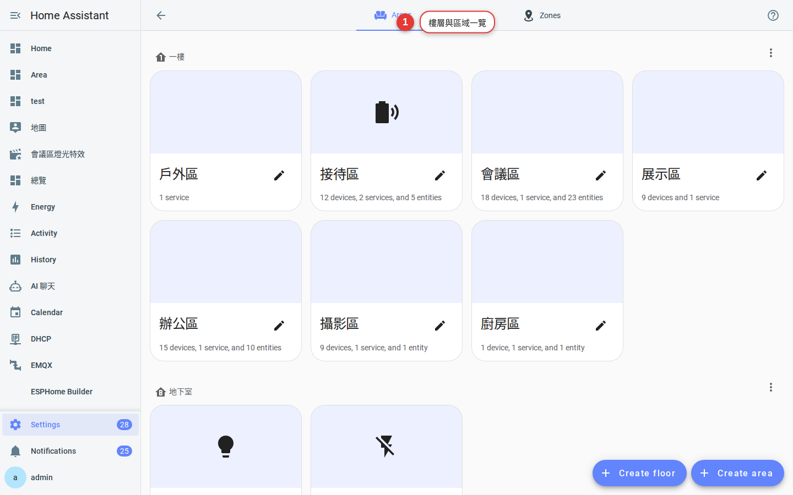
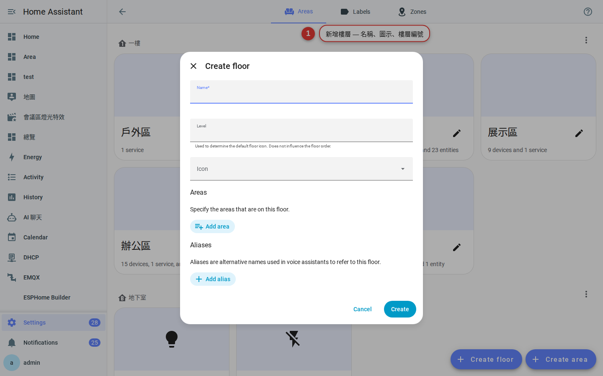
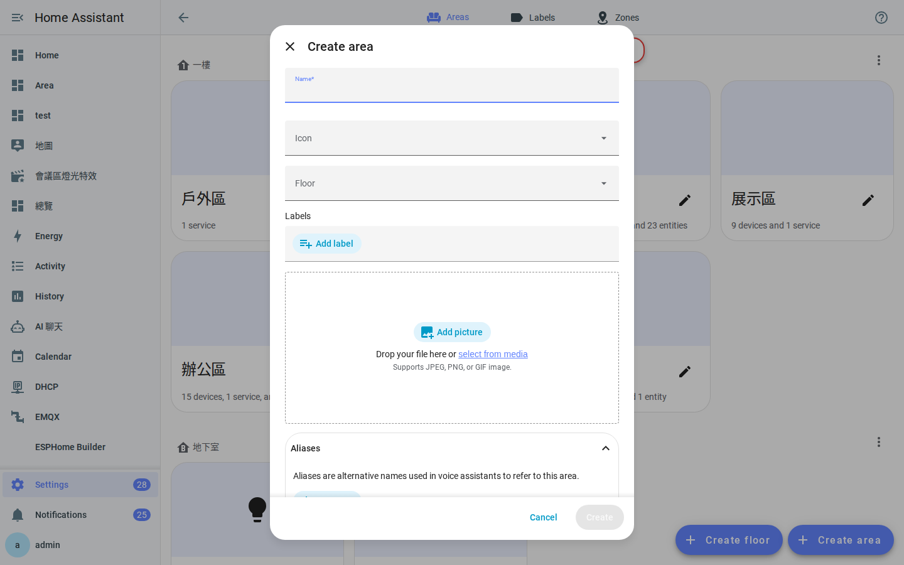
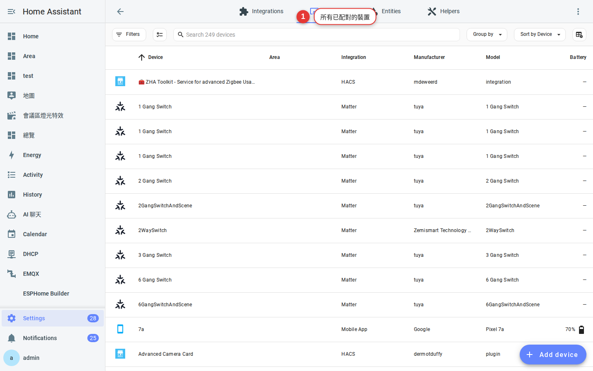
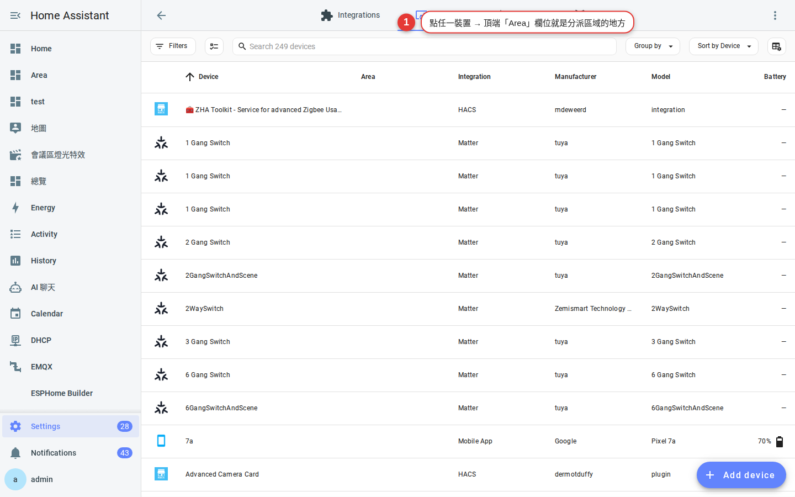
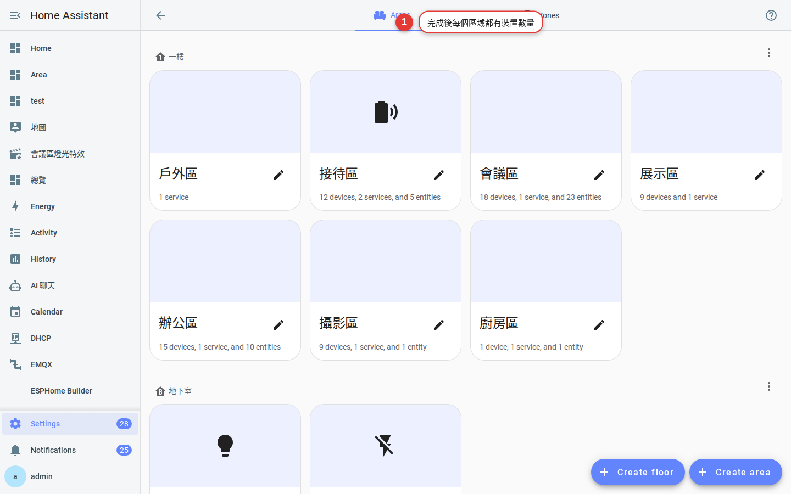

第 3 章
樓層與區域
先在 HA 裡「畫出」你家有幾層樓、每層有哪些房間。畫好之後，控制、儀表板、語音助理才會知道「開一樓客廳燈」是哪些燈。
為什麼要畫房子
HA 用三個層級來描述你家的物理空間：
- 樓層（Floor）：一樓、二樓、地下室、頂樓。
- 區域（Area）：客廳、主臥、廚房、車庫。
- 設備／實體：具體的燈泡、開關、感應器，放進區域裡。
畫好樓層與區域後，你會馬上得到這些能力：
- 語音：「Hey Google，關掉一樓所有燈」— HA 知道哪些燈屬於一樓。
- 儀表板：自動生成「以區域分頁」的視圖。
- 自動化：「主臥室有人動作」的條件寫得出來。
現況檢查
先進「設定 → 區域、樓層與區塊」看目前的狀態。你可能會看到三種情況：
- 全空 — 全新安裝，最單純，跟著本章從頭做。
- 只有區域沒有樓層 — 舊版 HA 沒樓層概念，跟著本章補上樓層。
- 有樓層但混亂 — 之前試過但沒整理，考慮先刪掉重來。

先想好結構（花 5 分鐘就好）
建議先在紙上或腦袋裡列出：
- 有幾層樓？地下室算不算？
- 每層樓有哪些「你會用語音或自動化提到的空間」？
- 「陽台」「玄關」「走廊」要不要獨立成一個區域？
命名建議：用你日常會講的名字。你會說「打開主臥燈」就叫「主臥」，不要叫「Bedroom_M」。中文對語音助理沒問題。
命名反例：不要用縮寫（
LR）、代號（Zone_A）、複數（Bedrooms）— 之後你自己也會忘記哪個是哪個。動手建立
-
新增樓層
頁面右上角「＋ 建立樓層」→ 輸入「一樓」→ 選一個圖示（例如
mdi:home-floor-1）→ 儲存。重複建立「二樓」「地下室」等。
圖 3-2新增樓層對話框 — 名稱、圖示、樓層編號。 -
樓層編號的用途
樓層編號用來排序：地下室
-1、一樓1、二樓2、頂樓10。之後在儀表板、卡片上會照這個順序顯示。 -
新增區域
點某個樓層底下的「＋ 建立區域」→ 輸入「客廳」→ 選圖示（
mdi:sofa）→ 儲存。
圖 3-3新增區域對話框 — 名稱、圖示、所屬樓層。 -
常見區域清單（可直接抄）
一樓：玄關、客廳、餐廳、廚房、客用衛浴、後陽台。
二樓：主臥、主浴、小孩房、書房、走廊。
戶外：庭院、車庫、大門口。
提示：「戶外」建成一個沒有指定樓層的區域也可以，或是自己開一個「戶外」樓層。
把設備放進區域
光有空框還不夠，要把設備放進去：
-
進「設定 → 裝置與服務 → 裝置」
看到所有已配對的裝置列表。

圖 3-4裝置列表 — 每個裝置右邊會顯示所屬區域，未指定的是空白。 -
點一個裝置 → 右上角編輯（鉛筆）→ 選區域
下拉選單會列出你剛才建的所有區域，選一個儲存。

圖 3-5把裝置指定給區域。 -
批次指定（多個裝置一起）
裝置列表右上角有「批次選取」— 勾多個之後可以一次「移到區域」。剛裝完一整個房間的燈，這功能很省時間。
完成對照
做完之後，回到「區域、樓層與區塊」頁應該長這樣：

接下來到左側選單的「總覽」，切到「以區域為分頁」的檢視，你會看到 HA 自動幫每個區域生成一張卡片。
常見問題
可以之後再改樓層／區域名稱嗎？
可以。改名字不會影響設備連結，也不會弄壞自動化（自動化用的是內部 ID）。但顯示名稱會全站同步變更。
一個裝置能不能同時屬於兩個區域？
不能。裝置只能屬於一個區域。如果一個燈同時在「客廳」和「餐廳」開放式空間，選最主要的那個。
刪掉一個區域，裡面的設備會不見嗎？
不會，設備還在，只是變成「未指定區域」。可以隨時再指定回去。
不是每個房間都要建區域嗎？
不是。只有你會「用到」的房間才需要。儲藏室裡沒有任何智慧設備就不必建。之後有新設備要放時再補。